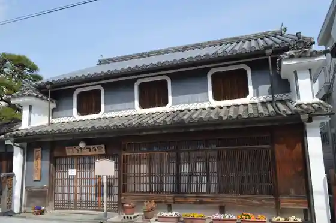
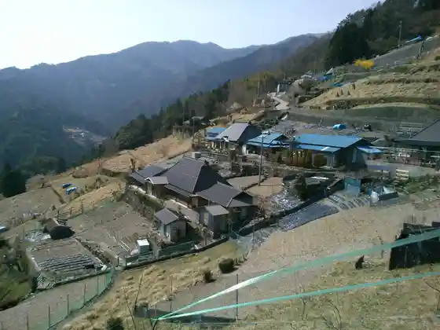
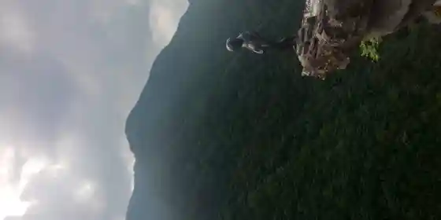
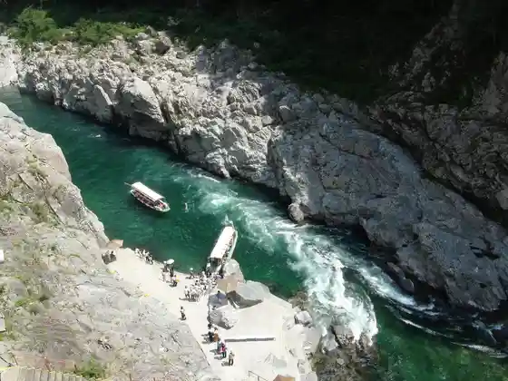

Oboke Koboke
Miyoshi, Tokushima · Official / source link
Udatsu no Streetscape Awaikeda Udatsu no Ie Tabako Museum
Miyoshi, Tokushima · 0883-72-3450 · Official / source link

Ochiai Shuraku Ochiai Shuraku Tembo Tokoro
Miyoshi, Tokushima · Official / source link

Iyakei Shoben Kozo Hi no Ji Gorge
Miyoshi, Tokushima · Official / source link

Oboke Kyo Mannaka / Oboke Kyo Kanko Yuransen
Miyoshi, Tokushima · 0883-84-1211 · Official / source link

Hashikura Tera
Miyoshi, Tokushima · 0883-72-0812 · Official / source link
Hashikura Yama Ropuei
Miyoshi, Tokushima · 0883-72-0818 · Official / source link
Ikeda Hesotsu Mizumi Bridge
Miyoshi, Tokushima · Official / source link
Biwa Falls
Miyoshi, Tokushima · Official / source link
Oku Iya Niju Kazura Hashi
Miyoshi, Tokushima · Official / source link
Iya no Kazura Hashi
Miyoshi, Tokushima · Official / source link
O Konomi Yaki Tsukushi
Miyoshi, Tokushima · 0883-72-6389 · Official / source link
Aji no Shinise Yachiyo
Miyoshi, Tokushima · 0883-72-0512 · Official / source link
Soba Tokoro Iya Hashi
Miyoshi, Tokushima · 0883-86-1178 · Official / source link
Ikoi Shokudo
Miyoshi, Tokushima · 0883-87-2840 · Official / source link
Mike Koto Tokoro Yanamoto
Miyoshi, Tokushima · 0883‐88-2354 · Official / source link
Nichinichi Kohii Mise
Miyoshi, Tokushima · 0883-77-2528 · Official / source link
Aji Ichi Asan
Miyoshi, Tokushima · 0883-72-2163 · Official / source link
Men Tokoro Awa
Miyoshi, Tokushima · 090-1009-0304 · Official / source link
Ikeda Ya
Miyoshi, Tokushima · Official / source link
Cafe&Bar YAMAYA
Miyoshi, Tokushima · Official / source link
Bar g
Miyoshi, Tokushima · Official / source link
Kohii Kan Oboke
Miyoshi, Tokushima · 0883-84-1433 · Official / source link
Antaku Ya Main Shop So Main Shop
Miyoshi, Tokushima · Official / source link
Kenzan
Miyoshi, Tokushima · 0883-62-2772 · Official / source link
Mei Goro Kakashi Village
Miyoshi, Tokushima · Official / source link
Mitsumine
Miyoshi, Tokushima · Official / source link
Kurosawa Marsh
Miyoshi, Tokushima · Official / source link
Shiozuka Highlands
Miyoshi, Tokushima · 0883-86-3077 · Official / source link
Roadside Station Oboke Yokai Yashiki to Ishi no Museum
Miyoshi, Tokushima · 0883-84-1489 · Official / source link
Koboke Lookout
Miyoshi, Tokushima · Official / source link
Iya Fureai Park
Miyoshi, Tokushima · 0883-76-8585 · Official / source link
Heike Yashiki Folk Museum
Miyoshi, Tokushima · 0883-84-1408 · Official / source link
RiverStation West West
Miyoshi, Tokushima · 0883-84-1117 · Official / source link
Higashi Iya Folk History Museum
Miyoshi, Tokushima · 0883-88-2286 · Official / source link
Nagaoka Ie House
Miyoshi, Tokushima · 0883-72-3900 · Official / source link
Buke Residence Kyu Kita Ie
Miyoshi, Tokushima · 0883-88-2040 · Official / source link
Chiiori
Miyoshi, Tokushima · 0883-88-5290 · Official / source link
Handa Iwa
Miyoshi, Tokushima · Official / source link
Kongo Falls Tatsugashira Falls
Miyoshi, Tokushima · Official / source link
Tobi no Su Gorge
Miyoshi, Tokushima · Official / source link
Ji Tei Jii no Zo
Miyoshi, Tokushima · 0883-72-7620 · Official / source link
JR Tosansen Tsubojiri Eki
Miyoshi, Tokushima · 0883-72-0022 · Official / source link
Ware Hashi Unkai Lookout
Miyoshi, Tokushima · Official / source link
Baba Lookout
Miyoshi, Tokushima · Official / source link
Kazura Hashi Yume Butai
Miyoshi, Tokushima · 0883-87-2200 · Official / source link
Heike Residence Asa Ie House
Miyoshi, Tokushima · 0883-72-3900 · Official / source link
Miyoshi Ikawa Furusato Koryu Center Folk Museum
Miyoshi, Tokushima · 0883-78-4311 · Official / source link
Ryugagaku
Miyoshi, Tokushima · Official / source link
no Shika Ikeyama
Miyoshi, Tokushima · Official / source link
Unpen Tera
Miyoshi, Tokushima · 0883-74-0066 · Official / source link
Kunimi Yama
Miyoshi, Tokushima · Official / source link
Ki Village Ie House
Miyoshi, Tokushima · 0883-72-3900 · Official / source link
Kyu Sho Sai Ie House
Miyoshi, Tokushima · 0883-72-3900 · Official / source link
Toku Zen Residence
Miyoshi, Tokushima · Official / source link
Chi Fuku Tera (Heike no Akahata)
Miyoshi, Tokushima · 0883-78-2759 · Official / source link
Kawato Kacho Kamon
Miyoshi, Tokushima · 0883-72-3900 · Official / source link
Taki Tera
Miyoshi, Tokushima · 0883-77-2486 · Official / source link
Komiya Shrine
Miyoshi, Tokushima · Official / source link
Ari Miya Shrine
Miyoshi, Tokushima · Official / source link
Uta Ga Satoshi Ken Shrine
Miyoshi, Tokushima · 0883-86-1322 · Official / source link
Hachiman Shrine
Miyoshi, Tokushima · Official / source link
Maruyama Shrine
Miyoshi, Tokushima · Official / source link
Suwa Shrine
Miyoshi, Tokushima · Official / source link